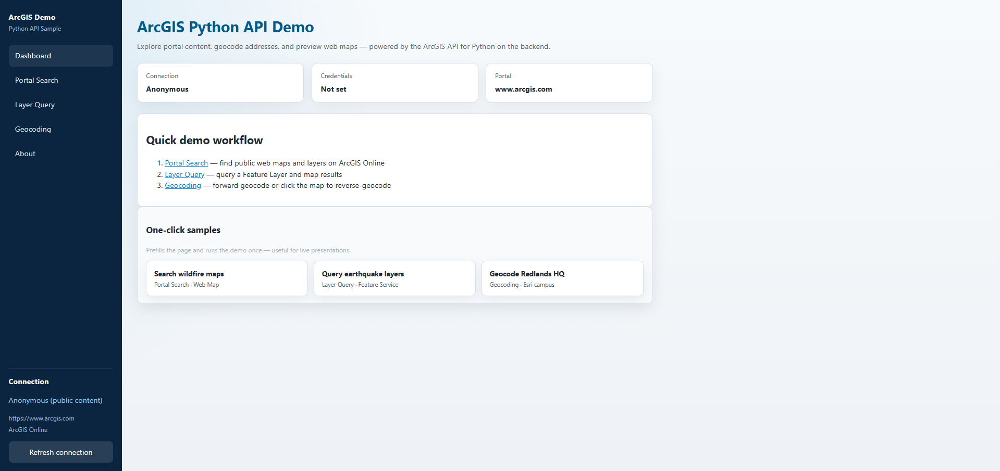
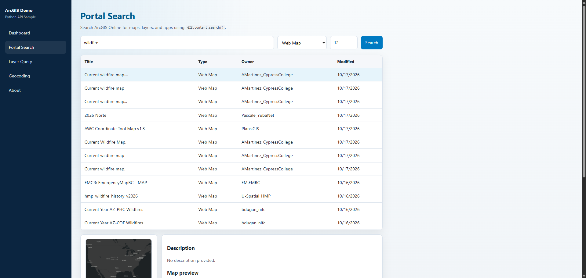
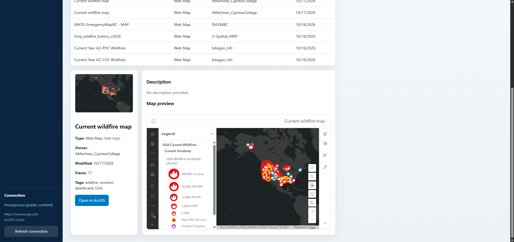
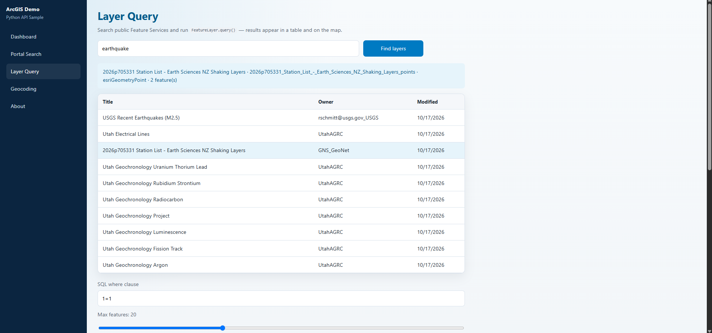
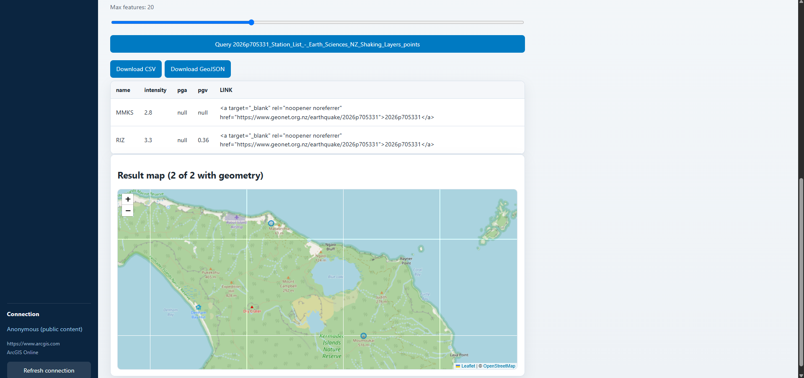
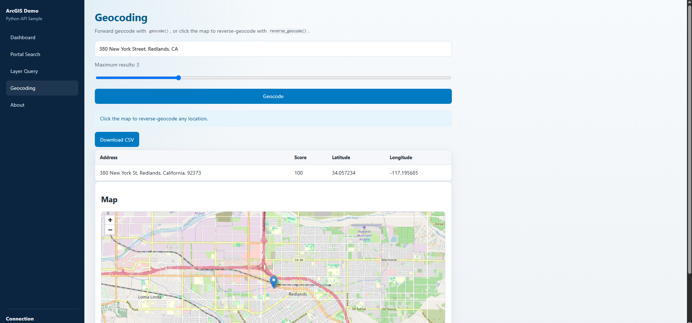
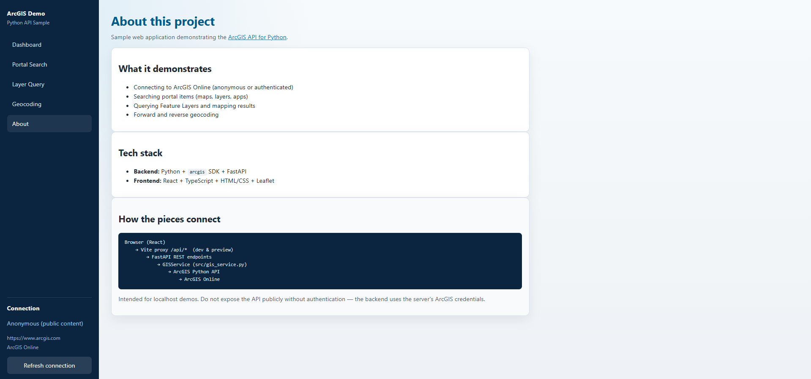

ArcGIS Python API Demo
Interactive sample app for the ArcGIS API for Python: portal search, FeatureLayer queries on a map, and forward/reverse geocoding — React UI over a FastAPI backend that calls ArcGIS Online.
Overview
What this project does
A browser UI over live ArcGIS Online calls made by the Python API on the server — not a hosted GIS platform, and not a substitute for ArcGIS Pro or full Enterprise. The React frontend never imports arcgis; it calls HTTP /api/* endpoints. FastAPI routes into GISService, which wraps portal search, FeatureLayer query, and geocoding.
What it demonstrates
ArcGIS Python API surface
- Portal Search —
GIS.content.search()for maps, layers, and apps, with item details and Web Map preview. - Layer Query — Feature Service discovery, SQL
where, attribute table + Leaflet map, CSV / GeoJSON download. - Geocoding — forward
geocode()and map-clickreverse_geocode(), with CSV export. - Connection — anonymous public ArcGIS Online by default; optional credentials for org content.
Architecture
How the pieces connect
Browser (React / TypeScript / Leaflet) → HTTP /api/* → FastAPI → GISService (src/gis_service.py) → ArcGIS API for Python → ArcGIS Online. GitHub Pages hosts the frontend; a separate backend (e.g. Render) serves the API. Full demos need that backend linked via VITE_API_BASE.
Notes
Honest scope
- Intended for academic, educational, and demonstration use (CC BY 4.0; cite via CITATION.cff).
- Esri products and portal content remain under Esri’s terms; public items keep their own licenses.
- Free hosted backends may sleep when idle — first requests after cold start can take longer.
Application
Screenshots
Click any image to zoom in.






